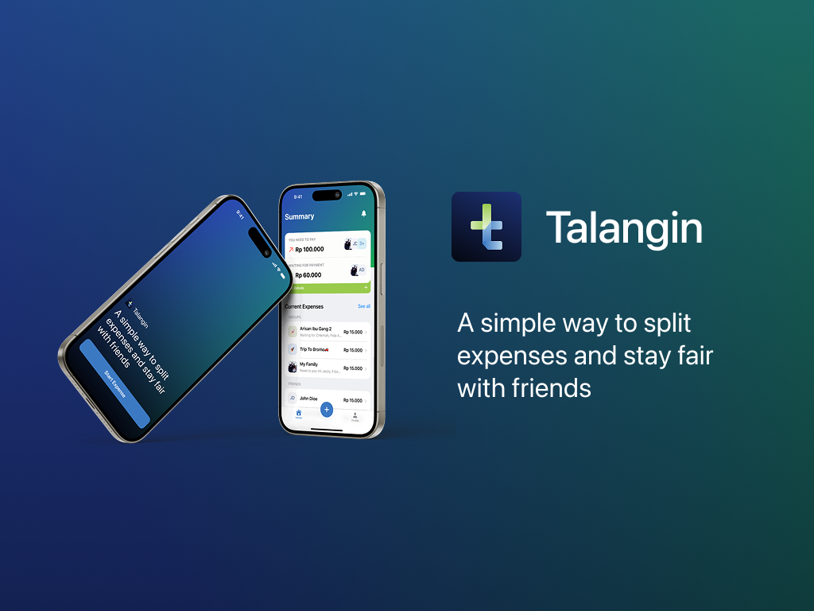

Talangin
Track Shared Expenses
Talangin is an application designed to help young people manage shared expenses across multiple social circles using smart receipt scanning and automatic calculations, making payments transparent, fair, and free from miscalculations or the awkwardness of asking others to pay. I served as the Tech Lead on this project, responsible for defining the technical architecture, leading feature development, and managing the deployment to TestFlight.
SwiftUISwiftDataVision
Jan 2026